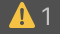

Console 窗口
The Console Window displays errors, warnings, and other messages the Editor generates. These errors and warnings help you find issues in your project, such as script compilation errors. They also alert you to actions the Editor has taken automatically, such as replacing missing meta files, which could cause an issue somewhere else in your project.
To help you debug your project, use the Debug class to print your own messages to the Console. For example, you can print the value of a variable at certain points in your script to see how they change.
This page covers the options you can use when you work with the Console window, and how you can filter your messages by searching for specific keywords.
Console window interface
To open the Console, from Unity’s main menu go to Window > General > Console.
A. The Console toolbar has options for controlling how to display messages, and for searching and filtering messages.
B. The Console window menu has options for opening Log files, controlling how much of each message is visible in the list, and setting stack trace options.
C. The Console list displays an entry for each logged message. Select a message to display its entire text in the detail area. You can choose how many lines of each message to display here. See Adjusting the line count, below.
D. The detail area displays the full text of the selected message. If you enable stack trace, the detail area displays references to specific lines in code files as clickable links.
Console 工具栏选项
The toolbar of the Console window has options for controlling how to display messages, and for searching and filtering messages.
| Option: | Function: | |
|---|---|---|
| Clear | Removes any messages generated from your code but retains compiler errors. Opens a dropdown menu with clearing options. |
|
| Clear On Play | 每当进入播放模式时就会自动清空控制台。 | |
| Clear on Build | 在构建项目时清空控制台。 | |
| Clear on Recompile | Clears the console when you recompile the Project. | |
| Collapse | Displays only the first instance of recurring error messages. This is useful for run-time errors, such as null references, that are sometimes generated on each frame update. |
|
| Error Pause | Pauses playback whenever you call Debug.LogError from a script. Use this to freeze playback at a specific point in the execution and inspect the Scene. This option doesn’t pause playback when you call Debug.Log from a script. |
|
| [Attach-to-Player] | Opens a drop-down menu with options for connecting to development builds that are running on remote devices, and displaying their Player logs in the Console. This option is labeled with the name of the target development build (which is the build of the log that’s displayed in the Console window). If the Console isn’t connected to a remote build, it’s labeled Editor to show that the log displayed in the Console window is from the local Unity Editor. |
|
| Player Logging | If the Console is connected to a remote development build, this enables Player logging for the build. Disabling this option suspends logging, but the Console remains connected to the target build. Disabling this option also hides the rest of the options in this drop-down menu. Select any build listed below Player Logging to display its log in the Console window. |
|
| Editor | If the Console is connected to a remote development build, select this option to display the log from the local Unity Player instead of the log from the remote build. | |
<Enter IP> |
Opens the Enter Player IP dialog, where you can specify the IP address of a development build on a remote device. To connect to the build, select Connect in the dialog, and add it to the list of development builds at the bottom of the drop-down menu. |
|
| [DEVELOPMENT BUILDS] | Lists the available development builds. This includes autodetected builds, and those that you add using the Enter IP option. |
Searching and filtering Console output
You can search Console messages for specific keywords from the Console search bar. As you type a search term, the Console filters messages to display only those that contain matching text. The Console highlights only the first match in the message text, and only if it’s in the visible part of the message (see Adjusting the Line Count below).

You can search for anything that appears in any Console message, including numerals and special characters. For example, you can search for the time the console logged a message.
The search looks for exact matches of whatever you type in the search bar. You can’t search for two different terms at once, or use common search engine operators.
You can also filter Console messages by type. Click the buttons beside the search bar to toggle:
| 按钮 | 功能 |
|---|---|
|
Messages switch |
Displays the number of messages in the Console. Click to display or hide messages. |
|
 Warnings switch |
Displays the number of warnings in the Console. Click to display or hide warnings. |
|
Errors switch |
Displays the number of errors in the Console. Click to display or hide errors. |
Adjusting the line count
每个控制台条目的最大长度为 10 行。
To control how many lines of each entry are visible in the list, click the Console menu button, and select Log Entry > [X] Lines from the menu, where [X] is the number of lines to display for each entry.
A larger line count displays more of the text of each entry, but reduces the number of entries visible at any given time. The line count doesn’t affect the Console search function, which always searches the full message text. If the matching text is on a hidden line, the search returns the message in the results, but doesn’t expand it to reveal or highlight the matching text. You can see the full message text in the detail area, but the matching text isn’t highlighted there.
堆栈跟踪日志记录
Unity Console messages and log files can include detailed stack trace information. You can control the amount of stack trace information using the stack trace logging settings.
Opening Log files from the Console
Everything Unity or your code write to the Console Window is also written to a Log File. You can open Log files from the Console window menu. Select Open Player Log or Open Editor Log.